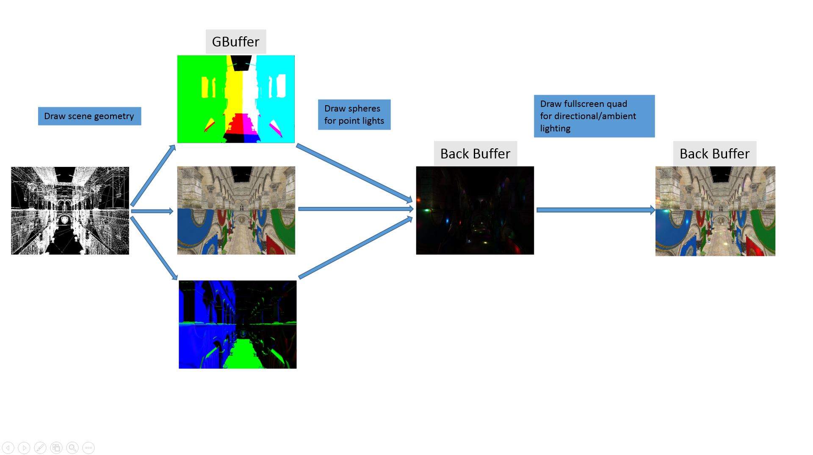
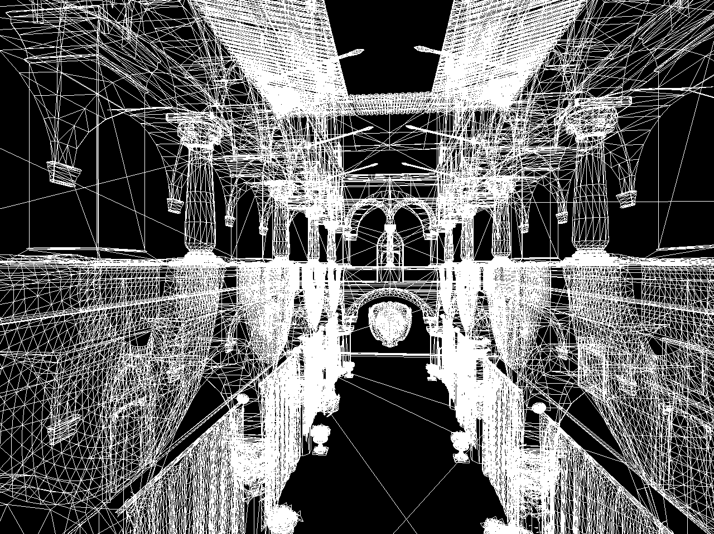
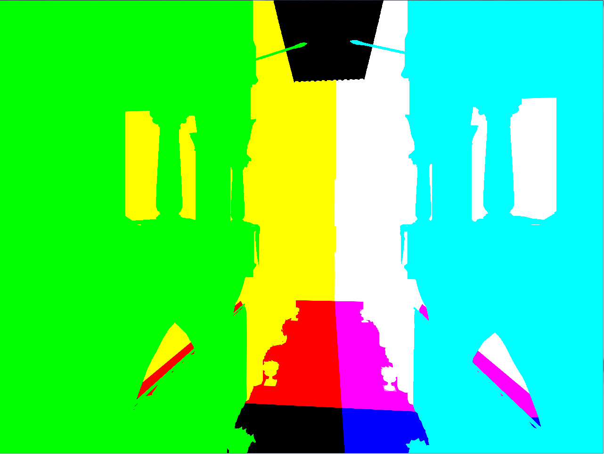
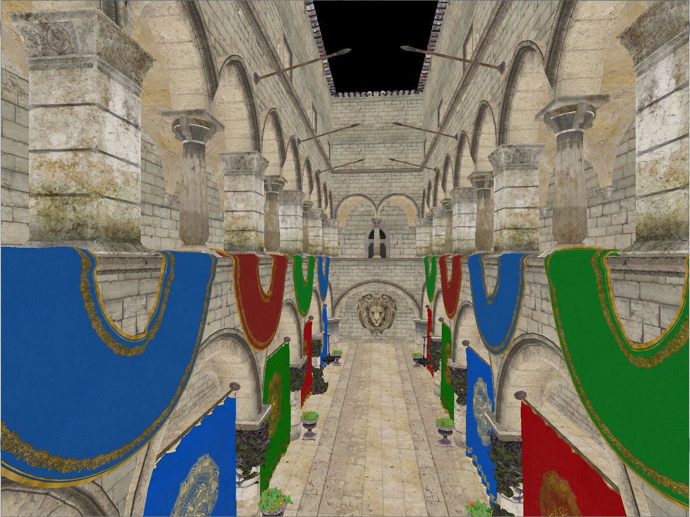
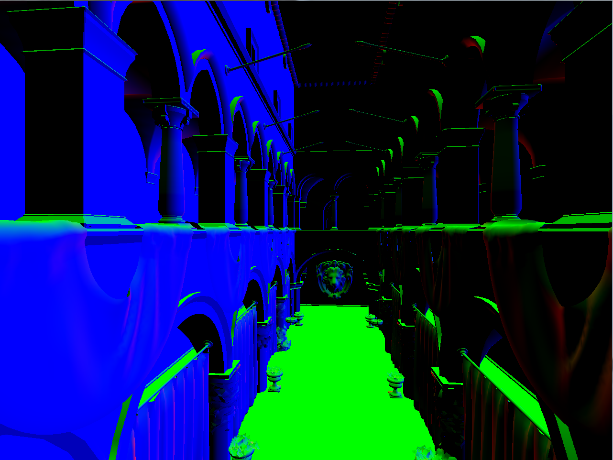
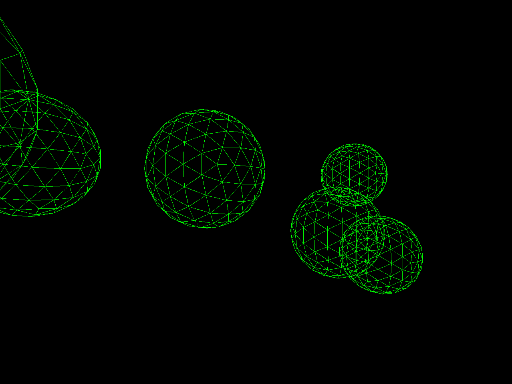
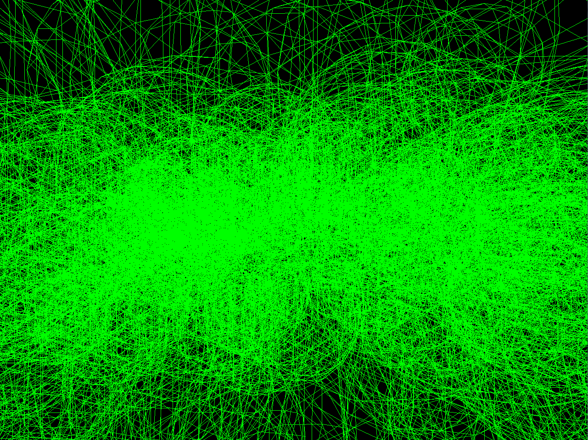
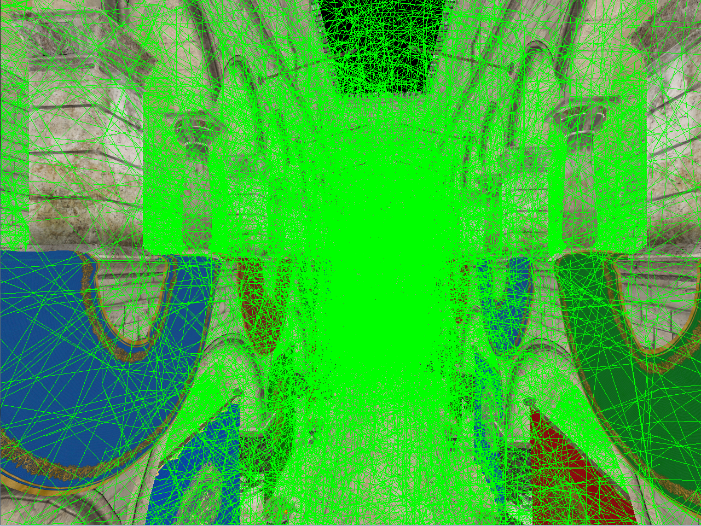
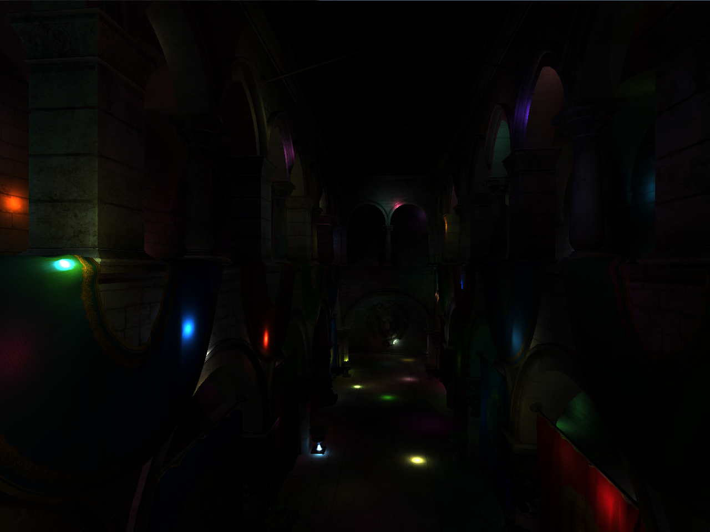
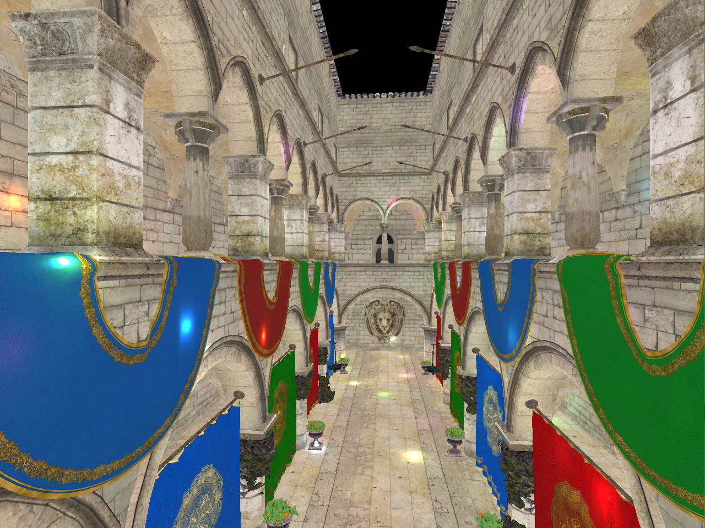

Introduction To Deferred Rendering
- High level overview of forward rendering pipeline
- High level overview of deferred rendering pipeline
- Deferred “Lighting” vs Deferred “Shading”
- Why bother with deferred rendering at all?
- Basic deferred pipeline in detail plus a demo :)
- Considerations for production ready deferred renderer
Forward rendering pipeline
- Set back buffer as target
- For each object in scene
- Bind shaders for object
- Bind textures and upload uniform data
- Upload info for all lights in scene that affect this object
- Draw object e.g. glDrawElements()
Deferred rendering pipeline
- Set GBuffer as target - multiple render targets
- Bind GBuffer shaders
- For each visible object in scene
- Bind textures and upload uniform data
- Draw object e.g. glDrawElements()
- Set back buffer as target
- Bind GBuffer targets as input textures
- Bind light volume shaders
- For each visible light in scene
- Draw light volume e.g. glDrawElements()
Deferred Lighting vs Deferred Shading
- Both techniques defer lighting to later stage of pipeline
- Deferred lighting reduces size of GBuffer by adding a 3rd render pass
- Deferred Shading has 2 passes:
- Render geometry to GBuffer
- Read data from GBuffer, calculate shading and output fully lit pixels
- Deferred Lighting has 3 passes:
- Render geometry to GBuffer
- Read data from GBuffer and output only diffuse and specular lighting data
- Read diffuse and specular data to calculate shading and output fully lit pixels
Why bother with deferred rendering at all?
- Decouples lighting from geomtery
- Allows for more dynamic lights
- Like, orders of magnitude more dynamic lights!
- Other bonuses
- Lights can be managed and culled like any other visual object in scene graph
- Possibly simpler management of shaders (This is debatable - depends on complexity of lighting/materials)
Basic deferred pipeline

Basic deferred pipeline

Scene geometry wireframe
Basic deferred pipeline

GBuffer - World Space Positions
Basic deferred pipeline

GBuffer - Diffuse Component
Basic deferred pipeline

GBuffer - Normals
Basic deferred pipeline

Point Light Spheres Wireframe
Basic deferred pipeline

Point Light Spheres Wireframe (1000 lights)
Basic deferred pipeline

Point Light Spheres Wireframe with Ambient Light
Basic deferred pipeline

Final Image - Point Lights Only
Basic deferred pipeline

Final Image - Point Lights and Ambient Light
Production ready deferred rendering
- Benefits
- Loooots of dynamic lights
- Problems
- High overdraw (Tile based deferred hybrid approach solves this)
- Order dependent transparency doesn’t fit well into pipeline (Do order independent or render forward separately - more solutions)
- Anti-aliasing - no more free MSAA (Solutions require extra work - edge detection and blurring etc.)
- Many different kinds of materials can increase GBuffer size significantly - not necessarily an issue on modern PC graphics hardware
- Seems like a lot of obstacles but there are effective solutions for all of them
Demo time!